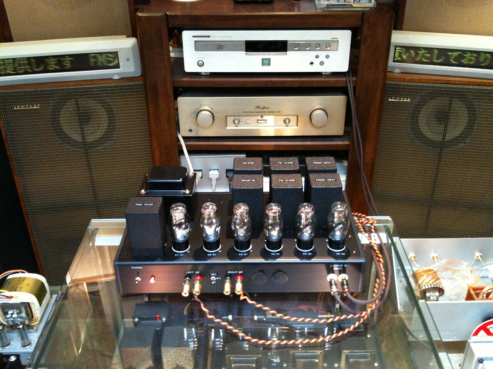
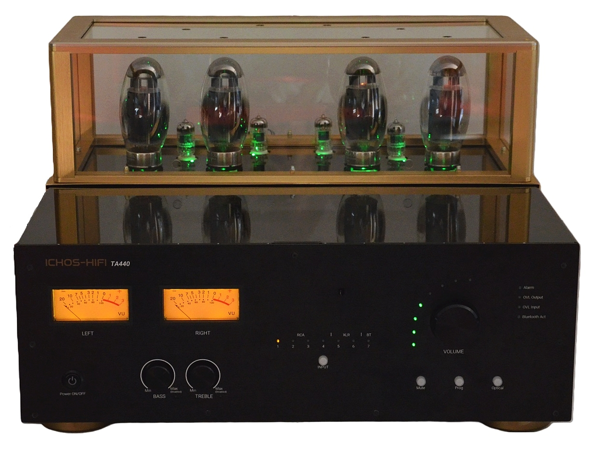

一条纸不分页
曳引打印纸没有分页，只有折页：每 20 行压一条 1px 折页压痕并空 1 行，形成 20 行一段的呼吸。命令与回执之间不空行，回执紧贴命令往下走。走纸位移与滚动 1:1，取整到 24px 的整数倍以免点阵字发虚；齿轮一格一格拽纸的阶跃感由 steps(6) 给，边孔的相位跟着一起走。
14:02:11 pump-3 夜班交接 上一班留牌 2 张 泵体停在 0 位 电流 4.1A 14:03:40 check pump-3 油位见窗 2/3 温度 41.2C 振动 1.8mm/s 密封无渗 14:04:12 check pump-3 出口压力 0.62MPa 与昨日同刻差 0.03MPa 14:05:02 摘牌 341 出口阀 已复位 挂牌人 白班甲 牌位 空 14:06:30 tag pump-3 下阀 关闭 挂牌人 白班甲 牌号 412 14:06:31 回执 412 牌位 泵体下阀 挂绳 已系 未摘 14:07:58 log 本段走纸 20 行 折页 1 处 纸位移 24px 的整数倍 14:09:20 check pump-3 联轴器护罩 螺栓 4 只 扭矩 42N·m 未复位 14:10:44 摘牌 412 泵体下阀 已复位 挂牌人 白班甲 牌位 空 14:11:03 tag pump-3 出口阀 关闭 挂牌人 白班甲 牌号 530 14:11:04 回执 530 牌位 出口阀 挂绳 已系 未摘 14:12:39 log 字体点阵英文与硬骨架中文并置 中文面高比英文高 1.5% 14:14:02 check pump-3 电流 4.0A 三相平衡 偏差 0.2A 14:15:20 log 拆纸 上一段 20 行 归档到检修单第 2 段 14:17:44 check pump-3 底座渗油 面积 30mm×12mm 未扩大 14:19:01 log 值守甲交班 值班乙接班 未摘牌 1 张 14:20:02 log 行尾光标 8×14px 实心块 按 530ms 方波闪动 14:21:03 tag pump-3 出口阀 关闭 挂牌人 值班乙 牌号 608 14:21:04 回执 608 牌位 出口阀 挂绳 已系 未摘 今日未摘 2 张 14:21:38 check pump-3 出口压力 0.61MPa 与挂牌前同值
14:22:07 409 写入牌位被占用 牌号 530 与 608 同占出口阀 14:22:07 回执 挂牌写入冲突 错误码 TAG-409 见页尾第 5 段 14:22:40 check pump-3 泵体温度 41.8C 比挂牌前高 0.6C 14:23:12 log 走纸 60 行 其中回执 6 条 挂牌 3 条 摘牌 2 条 14:24:01 check pump-3 阀杆涂层 无剥落 手轮 顺时针到底 14:25:33 log 边孔 8px 孔径 3px 孔距 12px 孔内 0.5px 单向下阴影 14:26:18 摘牌 341 出口阀 已复位 挂牌人 白班甲 牌位 空 14:27:02 tag pump-3 出口阀 关闭 挂牌人 值班乙 牌号 857 待核 14:27:03 回执 857 写入待核 出口阀 同牌位已有牌 未落绳 14:28:44 check pump-3 底座地脚 4 只 垫片 2 只 锈蚀面积 0 14:29:05 摘牌 412 泵体下阀 已复位 挂牌人 白班甲 牌位 空 14:30:10 log 纸位移取整 24px 之外的部分由边孔相位吸收 14:31:52 check pump-3 出口阀 手轮 逆时针 1/4 圈 有阻尼 14:33:06 log 拆纸 本段 20 行 归档到检修单第 3 段 14:34:19 check pump-3 电流 4.0A 温度 42.1C 出口压力 0.61MPa 14:35:40 log 未摘牌 2 张 挂在出口阀与泵体下阀 14:36:12 check pump-3 备用泵 pump-4 投运试验 电流 4.4A 正常 14:37:58 log 提交命令时该行左侧出现 1px 竖线 整行右推 3px 14:38:30 摘牌 530 出口阀 已复位 挂牌人 值班乙 牌位 空 14:39:02 回执 608 牌位 出口阀 挂绳 已系 未摘 今日未摘 1 张
14:40:11 check pump-3 联轴器 弹性块 4 只 无裂纹 14:41:26 log 维护说明段落 未来荧黑 16px 行高 1.8 与命令流分排 14:42:03 check pump-3 出口阀 阀位指示 与牌号 608 一致 14:43:15 摘牌 857 出口阀 未落绳 直接撤牌 牌位 空 14:44:02 log 值班乙 交班清点 挂出 4 张 已摘 3 张 未摘 1 张 14:45:20 check pump-3 泵体下阀 关闭 挂牌 412 已撤 无残胶 14:46:38 log 走纸 60 行结束 折页 3 处 下一段另起一条纸 14:47:09 check pump-3 现场清扫 完工 工具清点 12 件 清点完毕 14:48:22 log 点阵字显式关闭次像素抗锯齿 避免字面糊掉 14:49:40 check pump-3 出口压力 0.60MPa 温度 41.4C 14:50:02 log 纸头与纸尾各留 20 行空白 便于撕纸后归档 14:51:18 check pump-3 试运转 3 分钟 振动 1.7mm/s 无异常 14:52:30 log 本班未摘牌 2 张 移交下一班 挂绳与牌面完好 14:53:44 check pump-3 挂牌人签名 值班乙 牌号 530 已摘 14:54:50 log 检修单第 4 段 由白班甲填写 与走纸内容一致 14:55:12 check pump-3 底座 4 只地脚 扭矩 42N·m 复位 14:56:30 log 换纸 抽出旧纸 200ms 折页线与边孔保留 14:57:41 摘牌 608 出口阀 已复位 挂牌人 值班乙 牌位 空 14:58:02 回执 608 已摘 出口阀 牌位 空 今日未摘 0 张 14:59:00 log 纸尾 59 行处 摘完最后一张牌
三段共 60 行，其中回执行 9 条，每条行尾一枚 8×14px 实心光标；挂牌 4 条、摘牌 5 条。摘完最后一张牌之后，纸头会走一行空状态字，那一行抄在页尾第 5 段。
纸白上是耗材本色，不是灰
连续纸色 #C8C4AE 取的是耗材本色，饱和 19.1%，是脏色；它不是 #F5F5F5 那种灰。四件事决定这张纸看起来像不像被齿轮拽过的纸：边孔、孔内阴影、折页压痕、以及照片落纸后的两个色阶。四件都在这一张纸白上排开，因为它们只有在纸白上才看得清。
边孔在纸的两侧各一排，宽 8px、孔距 12px、孔径 3px；孔内有一道 0.5px 单向下阴影，表现纸被齿轮拽过之后孔的边缘被往下碾了一点。折页压痕是 1px 的固定行线，每 20 行一道，压痕两侧的墨色比别处淡 6% —— 纸被压过的地方不吃墨。这两样都不是装饰线：孔是齿轮咬的那个孔，折页是纸垛上折出来的那道折，换个产品套上去它们立刻变成没有意义的点状装饰。
| 段 | 行号 | 首行时刻 | 本段挂牌 | 本段摘牌 |
|---|---|---|---|---|
| 第 1 段 | 1 – 20 | 14:02:11 | 412 、530 | 341 、412 |
| 第 2 段 | 21 – 40 | 14:22:07 | 608 、857（待核） | 341 、412 、530 |
| 第 3 段 | 41 – 60 | 14:40:11 | 无 | 857 、608 |

.jpg){kind=link}
点阵落纸的两个色阶
照片先转灰度，再走 1-bit 点阵抖动，只保留磷光绿与纸白两个色阶；颗粒按行方向拉长 1.5 倍，贴合扫描线方向。所以照片上不会出现第三种颜色，也不会出现半调灰 —— 一块砖的明暗是靠点子的疏密说的，不是靠灰阶说的。
点阵字必须显式关掉次像素抗锯齿，否则字面会糊成一团。走纸位移只跑 transform，并且取整到 24px 的整数倍；不这么取整，点阵字的竖笔画会在半像素上发虚。
字体分工：命令流与回执号用 VT323（DEC VT320 终端点阵字），挂牌编号、出口码与时间戳用 Martian Mono 极窄档，中文用未来荧黑。点阵英文与硬骨架中文并置，中文字面比英文高 1.5%，混排时保留了两套铅字各自的对齐习惯。

挂牌写入冲突
挂牌写入冲突（错误码 TAG-409）：pump-3 今天已有 2 张未摘牌，请先摘牌或改用 /tag pump-3 --force
这条 409 是 14:22:07 由 /tag pump-3 打出来的：出口阀那个牌位上已经有 530，写入请求带了同一牌位，牌位只认一张牌，所以整条写入被退回来。牌是停机检修的唯一凭证，两张牌挂在同一个阀上，等于没人能说清该由谁签字复位。
| 请求 | /tag pump-3 出口阀 |
|---|---|
| 牌位占用 | 530 出口阀 · 挂于 14:11 · 挂绳已系 |
| 未摘牌 | 530 出口阀 、608 出口阀 |
| 可改用的写法 | /tag pump-3 --force 覆盖前需先摘掉 530 |
| 摘牌 | /untag pump-3 530 |
| 重试窗口 | 下一次能写牌位的时刻 14:22:40 |
重取只清牌位，不动已经挂上的两张牌。
牌位还是被占着。TAG-409 会一直挂在状态条上，直到 530 或 608 有一张摘掉。
摘完最后一张牌、当天记录清零之后，纸头走的是这一行：这台机组今天没有检修记录。输入 /tag pump-3 挂上第一张牌
走纸是唯一的主动效
- 滚动，走纸：纸张位移与滚动
1:1，缓动性格为阶跃式steps(6)，模拟曳引齿轮一格一格拽纸；位移取整到24px的整数倍，边孔的相位跟着一起走。 - 悬停，回执牌：牌绕挂绳摆
6°并回位，240ms，阻尼无过冲；牌本身不放大，绳子不拉伸。 - 加载，落纸：先出两侧边孔，再从首行向下逐行落纸，每行
40ms，缓动为阶跃；60行落完约2.4s，允许点击跳过。 - 转场，换纸：切换检修单时纸张向上抽出
200ms，折页线与边孔保留，新纸从纸头开始落。 - 光标：
8×14px实心块常闪，周期530ms，方波（半周期 530ms、全周期 1060ms），位置永远在当前命令流末尾，滚动时随纸走而不脱离文字。 - 微交互：提交命令时该行左侧出现一条
1px竖线并整行右推3px，保持300ms后回位。
抽出 200ms，纸头与折页线按原值回来。
光标图样：8×14px 实心块，行尾锚定，不随文字换行漂移。
减少动态时的再发明（prefers-reduced-motion: reduce）：逐行落纸不再推进位移，但落纸顺序完整保留 —— 边孔、20 行一条的折页线、8×14px 行尾光标、6px 连接短线与 1px 挂绳全部按原值呈现，只把落纸压成 120ms 的一次不透明度切换。
光标改为常亮不闪，但仍是 8×14px 的实心块、仍锚在行尾；挂牌不再摆动，静止帧里保留 6° 的挂绳偏角，于是「牌挂在绳上、绳挂在牌位上」这件事在不动的时候也读得出来。折页线每 20 行一条与边孔孔径 3px／孔距 12px 不变。
窄屏那一套也照旧：<1024px 边孔收窄到 5px 而孔距仍是 12px，悬挂区换成行内挂牌条（回执牌缩到 24×12px，挂在对应行尾下方 4px），命令流起点回到左侧 4%；<768px 孔径减到 4px 而孔距仍为 12px，挂牌条移到行尾右侧并改竖排。


四档宽度下边孔与挂牌怎么留
| 宽度 | 边孔 | 挂牌 | 列与起点 |
|---|---|---|---|
| ≥1440px | 两侧各 8px 宽，孔径 3px，孔距 12px | 悬挂区留 34% 空幅，牌挂在回执行右侧 | 命令流左端起于版心左侧 12%，行尾光标 8×14px 按 530ms 方波闪 |
| 1024–1439px | 8px ／ 3px ／ 12px 不变 | 悬挂区收到 22%，牌宽同步收窄 | 命令流起点回到左侧 6% |
| 768–1023px | 收窄到 5px 宽，孔距仍为 12px | 悬挂区换成行内挂牌条：牌缩到 24×12px，挂在对应行尾下方 4px | 命令流起点回到左侧 4%，折页线仍每 20 行一条，触屏点击热区不小于 44×44px |
| <768px | 孔径减到 4px，孔距仍为 12px | 挂牌条移到行尾右侧并改竖排 | 530ms 方波光标与折页线不变，命令流单列到底 |
四档之间没有一件东西是靠缩小字号让位的：行高 24px、基线 8px、折页 20 行一段、光标 8×14px、挂绳 1px、连接短线 6px 在四档里都是原值，变的只有边孔宽度、孔径与悬挂区那两列的比例。